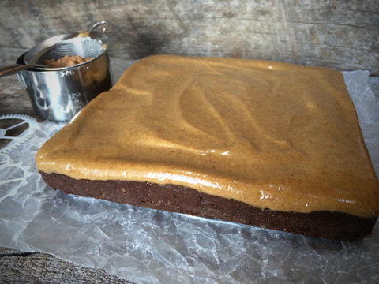
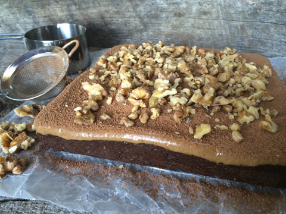
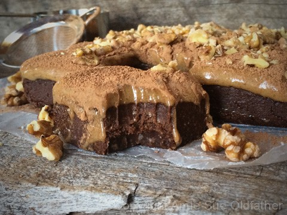

Smoked Paprika Chocolate Brownie with Caramel Frosting

~ raw, vegan, gluten-free, Paleo ~
I have never met a person who doesn’t enjoy brownies or caramel. I am sure there is someone out there who doesn’t, but me… or better yet Bob, are true lovers of both.
My goal was to make a cinnamon brownie, but I accidentally grabbed the smoked paprika (???) C for cinnamon… S for smoked paprika…???? How did I managed to do that is beyond me.
But some things are just meant to happen in life, and this was one of them. It turned out that we love the smokey flavor that was added to the deep, rich chocolate. Since I WAS going to make a cinnamon brownie and top it with chocolate ganache, I decided that caramel sounded like the perfect pairing for the smokey flavor. Sure enough, they came together like two-peas-in-a-pod.
While making the brownie batter and after watching the smoked paprika disappear into the batter, I felt that a hint of cayenne and cinnamon would further round out the flavors. I was right; they balanced each other quite well.
These brownies are rich, chewy, and a bit gooey with the luscious caramel frosting. A person might recommend serving them on a plate and daintily eat with a fork, but I say…”Fork be gone; let their fingers do the work!” Besides, half the fun is licking all the sticky frosting from your fingers. Or should it drip beyond your fingers and on to the countertop… I am here to say that there is no shame in licking the countertop either. hehe
There is nothing more satisfying than indulging in a brownie such as this knowing that it is rich in omega 3’s, protein, fiber, and energy-giving life-forces. But do keep in mind that it is still a dessert and one that ought to be eaten in moderation. I know, I know, you didn’t want to hear that, but what kind of “blogger” would I be if I didn’t keep an eye out for you?!
Before I let you go, I just wanted to say that this brownie can be made and enjoyed right away, or it can be chilled, so the caramel has a little more time to stiffen up a bit. It is always lovely to have such decadent treats such as this that can be made up quickly (providing you have the nuts already soaked and dehydrated, which is an excellent habit of getting into) for those unexpected guests or cravings. Many blessings, amie sue
Ingredients:
yields 8×8 pan
Brownie:
Caramel:
Preparation:
Brownie:
- Dates ~ if the dates are tough or more on the dry side, cover with enough hot water to re-hydrate them for 10 minutes. Once ready to use, discard the soak water and hand-squeeze the excess water out before adding it to the recipe.
- In a food processor, fitted with the “S” blade, place the walnuts and cashews in and process until they are broken down into tiny pieces. They won’t grind down to powder due to the natural oils in them. But be careful that you don’t over-process and start making walnut butter.
- Add cacao, smoked paprika, cinnamon, cayenne, and salt. Pulse together, so all the spices get mixed in well.
- Remove the lid and lay the dates around the bowl of the food processor. Add the coconut oil, lemon juice, honey, and vanilla. Return the lid and pulse a few times, then process until the dough starts to clump together in a ball.
- Line the 8×8 baking pan with plastic wrap or wax paper.
- Press the brownie batter down firmly and evenly.
Caramel frosting & assembly:
- Pour the caramel frosting on the brownie, cover, and chill in the fridge for 4+ hours. If you wish to eat it right away, that is fine too.
- Dust with cacao powder and sprinkle crushed walnuts on top. Cut into squares and enjoy.
- Store the leftovers in the fridge for 5-7 days. Be sure to keep them covered.
The Institute of Culinary Ingredients™
- Raw honey isn’t vegan, but I still use it now and again. Read (here) why I like to.
- Learn about the wonderful characteristics of Raw Coconut Nectar (here).
- Dates are a fantastic ingredient for raw food recipes, click (here) to read why.
- What is raw cacao powder?
- Why do I specify Ceylon cinnamon? Click (here) to learn why.
- What is Himalayan pink salt, and does it matter? Click (here) to read more about it.



© AmieSue.com